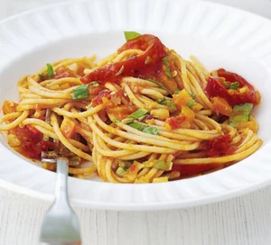

Back to home
Super-veg pasta

Ingredients
- 2 red peppers , quartered and deseeded
- 2 tbsp olive oil
- 1 fennel bulb, roughly chopped
- 1 onion , roughly chopped
- 1 large carrot , roughly chopped
- 2 garlic cloves , crushed
- ¼ tsp crushed chillies
- 1 tsp fennel seeds
- 2 tbsp tomato purée
- 400g can chopped tomatoes
- 600ml vegetable stock
- 1 tsp caster sugar
- small handful basil , leaves shredded
- 500g bag fresh egg pasta , cooked
Instructions
- Heat the grill and pop the peppers, skin-side up, underneath for 10 mins or until beginning to char. Transfer to a bowl, cover and set aside. When cool enough to handle, peel off the skin and cut the flesh into strips.
- Heat the oil in a large saucepan and cook the fennel, onion and carrot for 8-10 mins until softened. Stir in the garlic, crushed chillies, fennel seeds and tomato purée, cook for 2 mins, then add the canned tomatoes, stock and sugar. Simmer, uncovered, for 15 mins or until the vegetables are completely soft.
- Take out a couple of spoonfuls of the sauce (this will later add texture), then blend the rest in the saucepan until almost smooth with a stick blender. Simmer for 5 mins to thicken, then stir in the reserved sauce, shredded basil and peppers. Serve with the pasta.